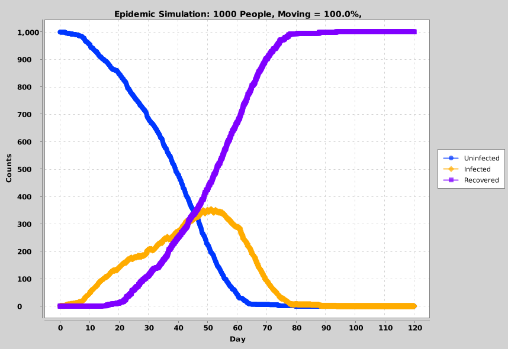
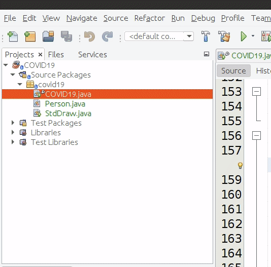
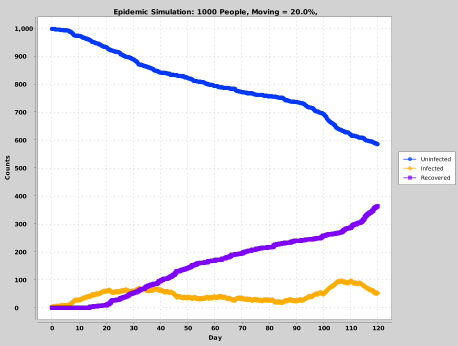
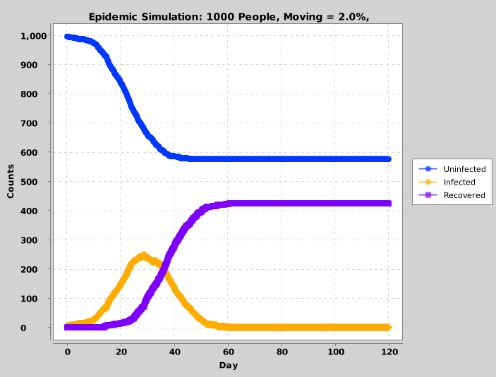
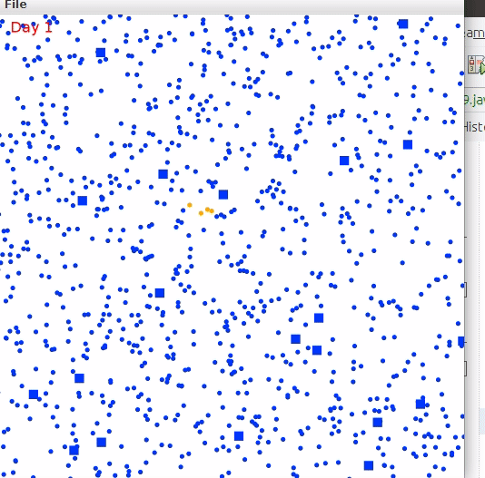

Lab 4: COVID Polymorphism (3 Points)
Chris Tralie
Due Friday 10/9/2020
Overview / Logistics
The purpose of this lab is to give you practice with the class declarations, polymorphism, and inheritance with a visual and highly relevant application. Click here to download the Netbeans starter code for this lab. When you are finished, you should zip it up and submit it on Canvas.
Learning Objectives
- Manipulate public, private, and protected variables/methods in classes
- Leverage code sharing between superclasses and subclasses
- Leverage polymorphism to create varying behaviors of otherwise similar objects
- Use multiple classes together in concert to accomplish a task
Background
The dynamics of a pandemic can be complicated since they involve millions of people, each with their own agenda. One way to get a handle on the qualitative behavior of complex phenomena that are difficult to model with equations is to run a Monte Carlo simulation. The idea is to have the computer crunch through a bunch of random experiments via simulation and to draw conclusions from their results.
In this assignment, you will be exploring how simple rules for local movements of people lead to complex global patterns during a pandemic. To simplify things, each person is a dot on a grid, and they take one step every hour, but their movements can vary based on a predefined set of behaviors. As they move around and come into contact with other people, each person can be uninfected, infected, or recovered.
Some of my former 173 students will recognize this as very similar to a lab we did last spring when the pandemic first hit. However, as you will see, using object-oriented programming strategies allows us to write much cleaner, more organized code. It will also allow us to easily implement varying motion patterns while keeping our code clean, so we will extend what we did before.
Programming Tasks
The simulation consists of an array of people that is continually processed in a time loop in the main driver class COVID19.java. Feel free to study this code, but there is very little you will need to modify, other than the types of people you place in the simulation in the initializePandemic() method; rather, you will focus on the classes that represent the people. In particular, the type of the array is Person, which is a parent class that holds variables common to all people, including
double x, y: The position of a person on a grid, where 0 <= x <= 1, 0 <= y <= 1boolean moving: Whether a person is moving or staying stillint state: Whether the person is infected, uninfected, or recoveredint timeSick: The amount of time a person has spent sick
move(double dist): A method to move by an amountdistvoid contactWith(Person other, double infectDist): A method to figure out if this person is in contact with another person by being within a distance ofinfectDist, and infecting them if so-
void updateStatus(int recoveryTime): A method to keep track of the amount of time someone has been sick and to recover them if they've been sick for long enough. -
void draw(double size): Draw this person on the 2D grid. By default, people are drawn as dots, but you will draw slightly different shapes for the other tasks. Regardless, uninfected people are drawn in blue, infected people are drawn in orange, and recovered people are drawn in purple. When you override thedraw()method, you can use thesetupPenColor()helper method to enforce this color scheme.
Aside from extra credit tasks, the behavior of contactWith() and updateStatus() should be the same. But you will be creating two different kinds of classes that extend Person and override the move() method to model different motion patterns and the draw() method so that you can visually pick out dots exhibiting different behaviors.
Task 1: Basic Simulation
Complete the basic simulation by filling in the contactWith and updateStatus methods in Person.java (see the comments for more details). Once you have them correct, you can play around with the parameters passed to the simulation. Even in this basic simulation where all people are simply taking random walks, the benefits of social distancing are already apparent. If there are 1000 people in the simulation and they are all moving, then the simulation proceeds as follows:

And at the end of the simulation, the program draws the following plot to summarize how many people were uninfected/infected/recovered at any point in time
As you can see, there's a peak of around 350 people infected at one time, which is a large percentage and which could put a strain on the healthcare system. By contract, if only 200 out of 100 people are moving, the simulation should look more like this:
As we can see from the plot summarizing the behavior below, the infection spreads much more slowly, and the number of infected people rarely rises above 100. This is the principle behind social distancing
Task 2: The Covidiot Class
There will always be troublemakers in any society. You can model one type of troublemaker that travels far and wide in spite of a global pandemic. We will call this type of person a Covidiot. A covidiot can be infected just as any other, but they have different motion patterns. In particular, they move in straight lines until they reach the boundary of the simulation, infecting everyone in their path if they are sick, and then they turn around. In the simulation, we draw them as dots that are twice as big so we can see who they are. Below is an example with only 20 Covidiots and everyone else staying completely still:
And we see that even with relatively few covidiots and a complete stay in place order otherwise, these covidiots can do a lot of damage. In fact, while the random local motion of the default person can lead to a quadratic rate of spread of the infection (roughly the area of a propagating circular wave), covidiots who move across large distances to see new infection sites can lead to an exponential spread of the infection, which is why many closed form models of pandemics include an exponential term.

To implement this, you should create a file Covidiot.java that extends the class in Person.java. Then, you should override the move method to get them to move in straight lines that stay within the bounds of the simulation. You can accomplish this by following these steps:
- Pick two random numbers
vxandvybetween 0 and 1 and set them in the constructor - In the
movemethod, change the x coordinate byvx*dist, and change the y coordinate byvy*dist. -
If the x coordinate goes out of bounds (< 0 or > 1), then move it back into the box and flip the sign of
vx. Do the same foryandvy
In addition overriding the move method, you should also override the draw method so that these dots are drawn at twice the radius of other dots.
Hint: you may want to change the setupPenColor() method to protected so that you can leverage that in your overridden drawn method.
Hint: To test this, you should modify the initializePandemic() method in COVID19.java so that some of the elements of the array are of type Covidiot. Because of polymorphism, that's all you need to change; the simulation will automatically determine at runtime which objects have overridden move and draw methods.
Task 3: The EssentialWorker Class
There are some people who have to go to work even during a pandemic, and they put themselves at risk to help us all. To model these, you will create a different class called EssentialWorker that also extends the Person class. You should randomly generate a direction that they move in to go to work (much like the vx and vy with the Covidiot class), and you should move in that reverse direction when they're coming home from work. The breakdown of their 24 hours should be as follows, in this order
- 8 hours at home
- 4 hours commuting to work (moving in the direction chosen in the constructor)
- 8 hours at work
- 4 hours commuting home (moving in the opposite direction chosen in the constructor), then back to 1
draw method to draw them as a filledSquare instead of a filledCircle so we can see who they are.
The simulation below shows a number of essential workers doing their thing, while others either stay still or move randomly

Putting It All Together
Once you've finished testing out the above to your satisfaction, you should create a simulation with all different types of people moving at once. To do this, add some number of each type to the people array in the initializePandemic() function COVID19.java You should play around with this to see the results and if they make sense.
Extra Credit (Up to +1)
We have only scratched the surface of what can be done with this type of Monte Carlo simulation. Here are a few other things you should try if you have time:
- Create a Nurse class and override the
contactWithmethod so that they have a 50% chance of healing infected person they're near and a 10% chance of getting sick if they are uninfected. To make this extra fancy, you can override themove()method so that the nurse stays still when they are sick, or they move towards the nearest sick person otherwise. - Add a variable about who's wearing a mask, and make it random whether people are infected based on who's wearing a mask. For instance:
- If an infected person and an uninfected person are wearing masks, there should be a 5% chance of infection
- If an infected person is wearing a mask and an uninfected person is not wearing a mask, then there is a 20% chance of infection
- If an uninfected person is wearing a mask but an infected person is not wearing a mask, there's a 60% chance of infection
- If neither are wearing a mask, there's a 95% chance of infection
- Add a class representing quarantine zones (such as rectangular regions), and update the simulation so that people move across these boundaries only with a very small probability. Play with this probability and see how effective the quarantines are at keeping the disease in/out based on how high the probability of a breach is.